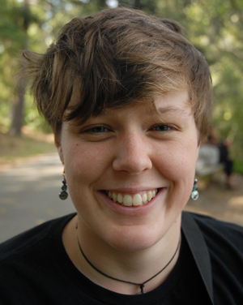

|

|
|
|
|
About Teaching Research Other
|
|
|
|
|
Welcome :)
Alina Sue Larson is a cognitive psychology PhD student
at the University of California, Santa Cruz.
Academic Advisor: Jean E. Fox Tree
UCSC Lab: Spontaneous Communication Laboratory
Web: Academia,
LinkedIn,
ResearchGate,
Google Scholar
Curriculum Vitae: CV.pdf
Statement:
I graduated from Lewis and Clark College in May 2012
with a double major in Psychology and
Foreign Languages (Russian and French).
I am currently a graduate student at UC Santa Cruz
in the Cognitive Psychology PhD program.
My research focuses primarily on multimodal aspects of social communication,
though my broader interests include visual
as well as auditory perception, language,
memory, abnormal psychology, as well as social psychology.
|
Contact:
|

|
|
|
|